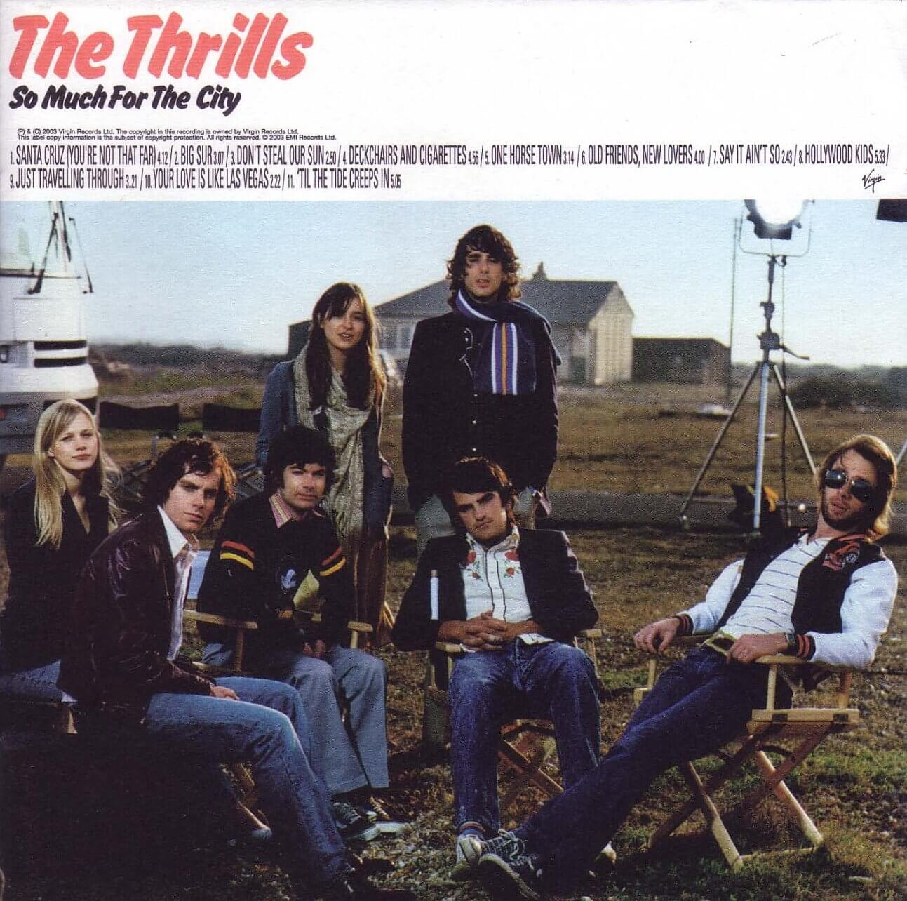
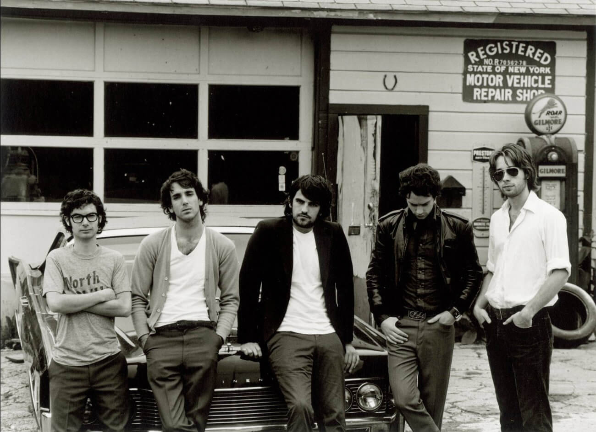

 The Thrills образовались в Дублине в 2001 году. В состав коллектива вошли: Конор Дизи, Даниел Райан, Падриак Макмеан, Кевин Хоран и Бен Карриган. По мнению обозревателей ресурса MTV.com, звучание группы «вдохновлено классической американской поп-музыкой конца 60-х и начала 70-х.» В конце 2002 года коллектив подписывает контракт с рекорд-лейблом Virgin. В 2003 году выходит дебютный альбом «So Much for the City». Пластинка, записанная в Лос-Анджелесе с продюсером Тони Хоффером, занимает первую позицию в ирландском и третью в британском чартах, и приобретает платиновый статус.  Также альбом номинируется на ежегодном Mercury Prize и берёт премии Q Awards и Irish Meteor Awards в категории Лучший Новый Исполнитель. В 2004 году состоялся релиз второго студийного альбома «Let's Bottle Bohemia». Продюсером лонг-плея выступил Дейв Сарди. Альбом попадает на первое место в альбомном чарте Ирландии и на девятое в Великобритании. Успех диска во многом был предопределен резонансным синглом «Whatever Happened To Corey Haim?». После ряда выступлений и турне в поддержку альбома группа берёт творческий перерыв. Третий альбом «Teenager» появляется на музыкальных прилавках в июне 2007 года. Он холодно воспринят аудиторией и получает смешанную критику со стороны музыкальной прессы. В 2008 году EMI прерывает сотрудничество с коллективом в связи с низкими показателями продаж. Группа до сих пор находится в творческом отпуске, хотя все музыканты уже давным-давно задействованы в других проектах. Ну, что ж, давайте вернемся в 2003 год. А у вас нет времени на творческий отпуск - выбирайте композицию ирландской группы или музыканта, записывайте кавер, снимайте на видео, выкладывайте в youtube, а ссылку отправляйте в личные сообщения на странице Просто Радио в Facebook https://www.facebook.com/ProstoRadi.O.NewRock/ или на irishtrue.vgorode.ua. Поспешите, заявки принимаются до 5 декабря, а на кону - Рокстар Уикенд в столице Ирландии!
конкурс